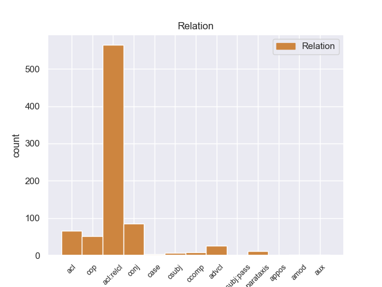
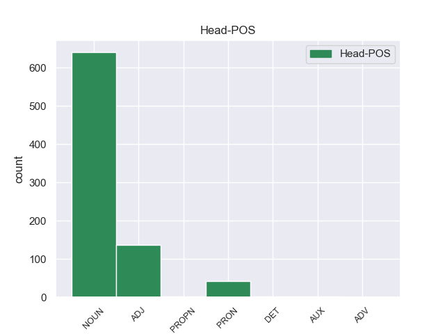
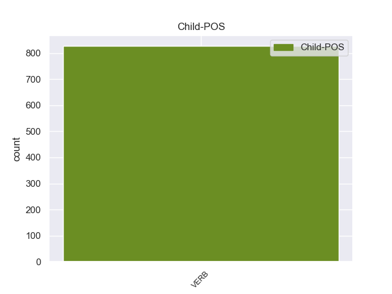

Distribution of features within this leaf



Agreement Rules sorted by frequency.
When the head token is NOUN and the dependent token is VERB.
1 Αυτό _ _ _ _ 0 _ _ _
2 μπορεί _ _ _ _ 0 _ _ _
3 να _ _ _ _ 0 _ _ _
4 μην _ _ _ _ 0 _ _ _
5 οδηγήσει _ _ _ _ 0 _ _ _
6 σ _ _ _ _ 0 _ _ _
7 τη _ _ _ _ 0 _ _ _
8 λήξη _ _ _ _ 0 _ _ _
9 του _ _ _ _ 0 _ _ _
10 εν _ _ _ _ 0 _ _ _
11 λόγω _ _ _ _ 0 _ _ _
12 ζητήματος _ _ _ _ 0 _ _ _
13 αλλά _ _ _ _ 0 _ _ _
14 , _ _ _ _ 0 _ _ _
15 σ _ _ _ _ 0 _ _ _
16 τη _ _ _ _ 0 _ _ _
17 μορφή _ _ _ _ 0 _ _ _
18 υπό _ _ _ _ 0 _ _ _
19 την _ _ _ _ 0 _ _ _
20 οποία _ _ _ _ 0 _ _ _
21 την _ _ _ _ 0 _ _ _
22 λάβαμε _ _ _ _ 0 _ _ _
23 , _ _ _ _ 0 _ _ _
24 αυτή _ _ _ _ 0 _ _ _
25 η _ _ _ _ 0 _ _ _
26 αίτηση _ _ _ _ 0 _ _ _
27 άρσης _ _ _ _ 0 _ _ _
28 της _ _ _ _ 0 _ _ _
29 ασυλίας _ _ _ _ 0 _ _ _
30 ήταν _ _ _ _ 0 _ _ _
31 , _ _ _ _ 0 _ _ _
32 κατά _ _ _ _ 0 _ _ _
33 την _ _ _ _ 0 _ _ _
34 άποψη _ _ _ _ 0 _ _ _
35 της _ _ _ _ 0 _ _ _
36 Επιτροπής _ _ _ _ 0 _ _ _
37 Νομικών _ _ _ _ 0 _ _ _
38 Θεμάτων _ _ _ _ 0 _ _ _
39 , _ _ _ _ 0 _ _ _
40 απαράδεκτη _ _ _ _ 0 _ _ _
41 , _ _ _ _ 0 _ _ _
42 άποψη άποψo NOUN _ Gender=Fem|Number=Sing 0 _ _ _
43 την _ _ _ _ 0 _ _ _
44 οποία _ _ _ _ 0 _ _ _
45 συνιστώ συνιστar VERB _ Mood=Sub|Number=Sing|Person=3|Tense=Pres|VerbForm=Fin 42 acl:relcl _ _
46 σ _ _ _ _ 0 _ _ _
47 το _ _ _ _ 0 _ _ _
48 Σώμα _ _ _ _ 0 _ _ _
49 να _ _ _ _ 0 _ _ _
50 υιοθετήσει _ _ _ _ 0 _ _ _
51 . _ _ _ _ 0 _ _ _
When the head token is NOUN and the dependent token is VERB. and the head token is ADJ and the dependent token is VERB.
1 Η _ _ _ _ 0 _ _ _
2 Μπενφίκα _ _ _ _ 0 _ _ _
3 ήταν _ _ _ _ 0 _ _ _
4 πιο _ _ _ _ 0 _ _ _
5 επιθετική επιθετικo ADJ _ Gender=Fem|Number=Sing 0 _ _ _
6 και _ _ _ _ 0 _ _ _
7 καλύτερη _ _ _ _ 0 _ _ _
8 σ _ _ _ _ 0 _ _ _
9 το _ _ _ _ 0 _ _ _
10 πρώτο _ _ _ _ 0 _ _ _
11 ημίχρονο _ _ _ _ 0 _ _ _
12 , _ _ _ _ 0 _ _ _
13 με _ _ _ _ 0 _ _ _
14 αποτέλεσμα αποτέλεσμα VERB _ Gender=Masc|Number=Sing 5 conj _ _
15 να _ _ _ _ 0 _ _ _
16 ανοίξει _ _ _ _ 0 _ _ _
17 το _ _ _ _ 0 _ _ _
18 σκορ _ _ _ _ 0 _ _ _
19 σ _ _ _ _ 0 _ _ _
20 το _ _ _ _ 0 _ _ _
21 πρώτο _ _ _ _ 0 _ _ _
22 λεπτό _ _ _ _ 0 _ _ _
23 των _ _ _ _ 0 _ _ _
24 καθυστερήσεων _ _ _ _ 0 _ _ _
25 , _ _ _ _ 0 _ _ _
26 χάρη _ _ _ _ 0 _ _ _
27 σ _ _ _ _ 0 _ _ _
28 τον _ _ _ _ 0 _ _ _
29 Μάξι _ _ _ _ 0 _ _ _
30 Περέιρα _ _ _ _ 0 _ _ _
31 . _ _ _ _ 0 _ _ _
When the head token is NOUN and the dependent token is VERB. and the head token is ADJ and the dependent token is VERB. and the head token is PRON and the dependent token is VERB.
1 πρόκειται _ _ _ _ 0 _ _ _
2 για _ _ _ _ 0 _ _ _
3 αυτό αυτό PRON _ Gender=Masc|Number=Sing|PronType=Ind 0 _ _ _
4 το _ _ _ _ 0 _ _ _
5 οποίο _ _ _ _ 0 _ _ _
6 αποκαλύφθηκε _ _ _ _ 0 _ _ _
7 κατά _ _ _ _ 0 _ _ _
8 τη _ _ _ _ 0 _ _ _
9 διάρκεια _ _ _ _ 0 _ _ _
10 αυτής _ _ _ _ 0 _ _ _
11 της _ _ _ _ 0 _ _ _
12 διαδικασίας _ _ _ _ 0 _ _ _
13 , _ _ _ _ 0 _ _ _
14 ότι _ _ _ _ 0 _ _ _
15 ο _ _ _ _ 0 _ _ _
16 Εισαγγελέας _ _ _ _ 0 _ _ _
17 κάποια _ _ _ _ 0 _ _ _
18 στιγμή _ _ _ _ 0 _ _ _
19 ζήτησε ζήτησar VERB _ Mood=Ind|Number=Sing|Person=3|Tense=Past|VerbForm=Fin 3 acl:relcl _ _
20 από _ _ _ _ 0 _ _ _
21 την _ _ _ _ 0 _ _ _
22 Πρόεδρο _ _ _ _ 0 _ _ _
23 του _ _ _ _ 0 _ _ _
24 Σώματος _ _ _ _ 0 _ _ _
25 , _ _ _ _ 0 _ _ _
26 την _ _ _ _ 0 _ _ _
27 προκάτοχό _ _ _ _ 0 _ _ _
28 σας _ _ _ _ 0 _ _ _
29 , _ _ _ _ 0 _ _ _
30 λεπτομέρειες _ _ _ _ 0 _ _ _
31 για _ _ _ _ 0 _ _ _
32 την _ _ _ _ 0 _ _ _
33 ψήφο _ _ _ _ 0 _ _ _
34 που _ _ _ _ 0 _ _ _
35 έχουν _ _ _ _ 0 _ _ _
36 δώσει _ _ _ _ 0 _ _ _
37 οι _ _ _ _ 0 _ _ _
38 δύο _ _ _ _ 0 _ _ _
39 συγκεκριμένοι _ _ _ _ 0 _ _ _
40 βουλευτές _ _ _ _ 0 _ _ _
41 προκειμένου _ _ _ _ 0 _ _ _
42 να _ _ _ _ 0 _ _ _
43 διευκρινιστεί _ _ _ _ 0 _ _ _
44 περαιτέρω _ _ _ _ 0 _ _ _
45 η _ _ _ _ 0 _ _ _
46 πιθανότητα _ _ _ _ 0 _ _ _
47 να _ _ _ _ 0 _ _ _
48 είχαν _ _ _ _ 0 _ _ _
49 ασκήσει _ _ _ _ 0 _ _ _
50 αθέμιτη _ _ _ _ 0 _ _ _
51 επιρροή _ _ _ _ 0 _ _ _
52 . _ _ _ _ 0 _ _ _
When the head token is NOUN and the dependent token is VERB. and the head token is ADJ and the dependent token is VERB. and the head token is PRON and the dependent token is VERB. and the head token is AUX and the dependent token is VERB.
1 Για _ _ _ _ 0 _ _ _
2 να _ _ _ _ 0 _ _ _
3 το _ _ _ _ 0 _ _ _
4 θέσουμε _ _ _ _ 0 _ _ _
5 ξεκάθαρα _ _ _ _ 0 _ _ _
6 , _ _ _ _ 0 _ _ _
7 η _ _ _ _ 0 _ _ _
8 μόνη _ _ _ _ 0 _ _ _
9 διαφορά _ _ _ _ 0 _ _ _
10 ανάμεσα _ _ _ _ 0 _ _ _
11 σε _ _ _ _ 0 _ _ _
12 έναν _ _ _ _ 0 _ _ _
13 επίσημο _ _ _ _ 0 _ _ _
14 αντιπρόσωπο _ _ _ _ 0 _ _ _
15 που _ _ _ _ 0 _ _ _
16 παρέχει _ _ _ _ 0 _ _ _
17 υπηρεσίες _ _ _ _ 0 _ _ _
18 μετά _ _ _ _ 0 _ _ _
19 την _ _ _ _ 0 _ _ _
20 πώληση _ _ _ _ 0 _ _ _
21 σήμερα _ _ _ _ 0 _ _ _
22 και _ _ _ _ 0 _ _ _
23 έναν _ _ _ _ 0 _ _ _
24 επίσημο _ _ _ _ 0 _ _ _
25 επισκευαστή _ _ _ _ 0 _ _ _
26 σ _ _ _ _ 0 _ _ _
27 το _ _ _ _ 0 _ _ _
28 προτεινόμενο _ _ _ _ 0 _ _ _
29 καθεστώς _ _ _ _ 0 _ _ _
30 αύριο _ _ _ _ 0 _ _ _
31 είναι ίναιer AUX _ Mood=Ind|Number=Sing|Person=3|Tense=Pres|VerbForm=Fin 0 _ _ _
32 ότι _ _ _ _ 0 _ _ _
33 ο _ _ _ _ 0 _ _ _
34 τελευταίος _ _ _ _ 0 _ _ _
35 μπορεί _ _ _ _ 0 _ _ _
36 να _ _ _ _ 0 _ _ _
37 μην _ _ _ _ 0 _ _ _
38 έχει tειr VERB _ Mood=Ind|Number=Sing|Person=3|Tense=Pres|VerbForm=Fin 31 ccomp _ _
39 έκθεση _ _ _ _ 0 _ _ _
40 από _ _ _ _ 0 _ _ _
41 την _ _ _ _ 0 _ _ _
42 οποία _ _ _ _ 0 _ _ _
43 να _ _ _ _ 0 _ _ _
44 πωλεί _ _ _ _ 0 _ _ _
45 αυτοκίνητα _ _ _ _ 0 _ _ _
46 . _ _ _ _ 0 _ _ _
When the head token is NOUN and the dependent token is VERB. and the head token is ADJ and the dependent token is VERB. and the head token is PRON and the dependent token is VERB. and the head token is AUX and the dependent token is VERB. and the head token is PROPN and the dependent token is VERB.
1 Ante _ _ _ _ 0 _ _ _
2 esto _ _ _ _ 0 _ _ _
3 , _ _ _ _ 0 _ _ _
4 Zhao zhao PROPN _ Gender=Masc|Number=Sing 0 _ _ _
5 Tuo _ _ _ _ 0 _ _ _
6 , _ _ _ _ 0 _ _ _
7 cegado cegado VERB _ Gender=Masc|Number=Sing|VerbForm=Part 4 acl _ _
8 por _ _ _ _ 0 _ _ _
9 la _ _ _ _ 0 _ _ _
10 ira _ _ _ _ 0 _ _ _
11 , _ _ _ _ 0 _ _ _
12 se _ _ _ _ 0 _ _ _
13 autoproclamó _ _ _ _ 0 _ _ _
14 Emperador _ _ _ _ 0 _ _ _
15 de _ _ _ _ 0 _ _ _
16 Nanyue _ _ _ _ 0 _ _ _
17 y _ _ _ _ 0 _ _ _
18 atacó _ _ _ _ 0 _ _ _
19 el _ _ _ _ 0 _ _ _
20 reino _ _ _ _ 0 _ _ _
21 de _ _ _ _ 0 _ _ _
22 Changsha _ _ _ _ 0 _ _ _
23 . _ _ _ _ 0 _ _ _
When the head token is NOUN and the dependent token is VERB. and the head token is ADJ and the dependent token is VERB. and the head token is PRON and the dependent token is VERB. and the head token is AUX and the dependent token is VERB. and the head token is PROPN and the dependent token is VERB. and the head token is DET and the dependent token is VERB.
1 Κύριε _ _ _ _ 0 _ _ _
2 Πρόεδρε _ _ _ _ 0 _ _ _
3 , _ _ _ _ 0 _ _ _
4 δεν _ _ _ _ 0 _ _ _
5 τρέφω _ _ _ _ 0 _ _ _
6 κανένα _ _ _ _ 0 _ _ _
7 σεβασμό _ _ _ _ 0 _ _ _
8 προς _ _ _ _ 0 _ _ _
9 εκείνους εκείνου DET _ Number=Plur 0 _ _ _
10 που _ _ _ _ 0 _ _ _
11 επιδιώκουν επιδιώκο VERB _ Mood=Ind|Number=Plur|Person=3|Tense=Pres|VerbForm=Fin 9 acl:relcl _ _
12 να _ _ _ _ 0 _ _ _
13 θυσιάσουν _ _ _ _ 0 _ _ _
14 την _ _ _ _ 0 _ _ _
15 ζωή _ _ _ _ 0 _ _ _
16 των _ _ _ _ 0 _ _ _
17 υπολοίπων _ _ _ _ 0 _ _ _
18 για _ _ _ _ 0 _ _ _
19 να _ _ _ _ 0 _ _ _
20 επιτύχουν _ _ _ _ 0 _ _ _
21 τους _ _ _ _ 0 _ _ _
22 στόχους _ _ _ _ 0 _ _ _
23 τους _ _ _ _ 0 _ _ _
24 . _ _ _ _ 0 _ _ _
When the head token is NOUN and the dependent token is VERB. and the head token is ADJ and the dependent token is VERB. and the head token is PRON and the dependent token is VERB. and the head token is AUX and the dependent token is VERB. and the head token is PROPN and the dependent token is VERB. and the head token is DET and the dependent token is VERB. and the head token is ADV and the dependent token is VERB.
1 Τεράστιος _ _ _ _ 0 _ _ _
2 είναι _ _ _ _ 0 _ _ _
3 και _ _ _ _ 0 _ _ _
4 ο _ _ _ _ 0 _ _ _
5 αριθμός _ _ _ _ 0 _ _ _
6 των _ _ _ _ 0 _ _ _
7 ανθρώπων _ _ _ _ 0 _ _ _
8 που _ _ _ _ 0 _ _ _
9 έχουν _ _ _ _ 0 _ _ _
10 μείνει _ _ _ _ 0 _ _ _
11 άστεγοι _ _ _ _ 0 _ _ _
12 , _ _ _ _ 0 _ _ _
13 καθώς _ _ _ _ 0 _ _ _
14 ανέρχονται _ _ _ _ 0 _ _ _
15 περίπου _ _ _ _ 0 _ _ _
16 σ _ _ _ _ 0 _ _ _
17 τους _ _ _ _ 0 _ _ _
18 50.000 _ _ _ _ 0 _ _ _
19 , _ _ _ _ 0 _ _ _
20 ενώ _ _ _ _ 0 _ _ _
21 πολλοί _ _ _ _ 0 _ _ _
22 είναι _ _ _ _ 0 _ _ _
23 εκείνοι εκείνο ADV _ Number=Plur 0 _ _ _
24 που _ _ _ _ 0 _ _ _
25 πέρασαν πέρασ VERB _ Mood=Ind|Number=Plur|Person=3|Tense=Past|VerbForm=Fin 23 acl:relcl _ _
26 τη _ _ _ _ 0 _ _ _
27 νύχτα _ _ _ _ 0 _ _ _
28 σε _ _ _ _ 0 _ _ _
29 στρατώνες _ _ _ _ 0 _ _ _
30 και _ _ _ _ 0 _ _ _
31 σχολεία _ _ _ _ 0 _ _ _
32 . _ _ _ _ 0 _ _ _
Disagree Examples:
1 Los _ _ _ _ 0 _ _ _
2 árboles _ _ _ _ 0 _ _ _
3 se _ _ _ _ 0 _ _ _
4 ubicarán _ _ _ _ 0 _ _ _
5 entre _ _ _ _ 0 _ _ _
6 las _ _ _ _ 0 _ _ _
7 barandillas barandilla NOUN _ Gender=Fem|Number=Plur 0 _ _ _
8 , _ _ _ _ 0 _ _ _
9 que _ _ _ _ 0 _ _ _
10 además _ _ _ _ 0 _ _ _
11 de _ _ _ _ 0 _ _ _
12 por _ _ _ _ 0 _ _ _
13 seguridad _ _ _ _ 0 _ _ _
14 , _ _ _ _ 0 _ _ _
15 se _ _ _ _ 0 _ _ _
16 han _ _ _ _ 0 _ _ _
17 colocado colocar VERB _ Gender=Masc|Number=Sing|Tense=Past|VerbForm=Part 7 acl:relcl _ _
18 para _ _ _ _ 0 _ _ _
19 evitar _ _ _ _ 0 _ _ _
20 que _ _ _ _ 0 _ _ _
21 los _ _ _ _ 0 _ _ _
22 coches _ _ _ _ 0 _ _ _
23 se _ _ _ _ 0 _ _ _
24 aparquen _ _ _ _ 0 _ _ _
25 encima _ _ _ _ 0 _ _ _
26 de _ _ _ _ 0 _ _ _
27 las _ _ _ _ 0 _ _ _
28 aceras _ _ _ _ 0 _ _ _
29 , _ _ _ _ 0 _ _ _
30 uno _ _ _ _ 0 _ _ _
31 de _ _ _ _ 0 _ _ _
32 los _ _ _ _ 0 _ _ _
33 grandes _ _ _ _ 0 _ _ _
34 cambios _ _ _ _ 0 _ _ _
35 de _ _ _ _ 0 _ _ _
36 imagen _ _ _ _ 0 _ _ _
37 de _ _ _ _ 0 _ _ _
38 la _ _ _ _ 0 _ _ _
39 renovada _ _ _ _ 0 _ _ _
40 vía _ _ _ _ 0 _ _ _
41 . _ _ _ _ 0 _ _ _
1 Muy _ _ _ _ 0 _ _ _
2 buen _ _ _ _ 0 _ _ _
3 taller taller NOUN _ Gender=Masc|Number=Sing 0 _ _ _
4 , _ _ _ _ 0 _ _ _
5 de _ _ _ _ 0 _ _ _
6 los _ _ _ _ 0 _ _ _
7 de _ _ _ _ 0 _ _ _
8 toda _ _ _ _ 0 _ _ _
9 la _ _ _ _ 0 _ _ _
10 vida _ _ _ _ 0 _ _ _
11 , _ _ _ _ 0 _ _ _
12 me _ _ _ _ 0 _ _ _
13 atendieron atender VERB _ Mood=Ind|Number=Plur|Person=3|Tense=Past|VerbForm=Fin 3 conj _ _
14 muy _ _ _ _ 0 _ _ _
15 bien _ _ _ _ 0 _ _ _
16 y _ _ _ _ 0 _ _ _
17 me _ _ _ _ 0 _ _ _
18 solucionaron _ _ _ _ 0 _ _ _
19 la _ _ _ _ 0 _ _ _
20 averia _ _ _ _ 0 _ _ _
21 en _ _ _ _ 0 _ _ _
22 poco _ _ _ _ 0 _ _ _
23 tiempo _ _ _ _ 0 _ _ _
24 ya _ _ _ _ 0 _ _ _
25 muy _ _ _ _ 0 _ _ _
26 buen _ _ _ _ 0 _ _ _
27 precio _ _ _ _ 0 _ _ _
28 . _ _ _ _ 0 _ _ _
1 Muy _ _ _ _ 0 _ _ _
2 buen _ _ _ _ 0 _ _ _
3 taller taller NOUN _ Gender=Masc|Number=Sing 0 _ _ _
4 , _ _ _ _ 0 _ _ _
5 de _ _ _ _ 0 _ _ _
6 los _ _ _ _ 0 _ _ _
7 de _ _ _ _ 0 _ _ _
8 toda _ _ _ _ 0 _ _ _
9 la _ _ _ _ 0 _ _ _
10 vida _ _ _ _ 0 _ _ _
11 , _ _ _ _ 0 _ _ _
12 me _ _ _ _ 0 _ _ _
13 atendieron _ _ _ _ 0 _ _ _
14 muy _ _ _ _ 0 _ _ _
15 bien _ _ _ _ 0 _ _ _
16 y _ _ _ _ 0 _ _ _
17 me _ _ _ _ 0 _ _ _
18 solucionaron solucionar VERB _ Mood=Ind|Number=Plur|Person=3|Tense=Past|VerbForm=Fin 3 conj _ _
19 la _ _ _ _ 0 _ _ _
20 averia _ _ _ _ 0 _ _ _
21 en _ _ _ _ 0 _ _ _
22 poco _ _ _ _ 0 _ _ _
23 tiempo _ _ _ _ 0 _ _ _
24 ya _ _ _ _ 0 _ _ _
25 muy _ _ _ _ 0 _ _ _
26 buen _ _ _ _ 0 _ _ _
27 precio _ _ _ _ 0 _ _ _
28 . _ _ _ _ 0 _ _ _
1 Aunque _ _ _ _ 0 _ _ _
2 la _ _ _ _ 0 _ _ _
3 necesidad _ _ _ _ 0 _ _ _
4 de _ _ _ _ 0 _ _ _
5 emprender _ _ _ _ 0 _ _ _
6 la _ _ _ _ 0 _ _ _
7 conquista _ _ _ _ 0 _ _ _
8 contra _ _ _ _ 0 _ _ _
9 el _ _ _ _ 0 _ _ _
10 islam _ _ _ _ 0 _ _ _
11 de _ _ _ _ 0 _ _ _
12 Mallorca _ _ _ _ 0 _ _ _
13 se _ _ _ _ 0 _ _ _
14 había _ _ _ _ 0 _ _ _
15 proclamado _ _ _ _ 0 _ _ _
16 en _ _ _ _ 0 _ _ _
17 las _ _ _ _ 0 _ _ _
18 cortes corte NOUN _ Gender=Fem|Number=Plur 0 _ _ _
19 de _ _ _ _ 0 _ _ _
20 Tortosa _ _ _ _ 0 _ _ _
21 de _ _ _ _ 0 _ _ _
22 1225 _ _ _ _ 0 _ _ _
23 , _ _ _ _ 0 _ _ _
24 cuya _ _ _ _ 0 _ _ _
25 iniciativa _ _ _ _ 0 _ _ _
26 comenzó comenzar VERB _ Mood=Ind|Number=Sing|Person=3|Tense=Past|VerbForm=Fin 18 acl:relcl _ _
27 con _ _ _ _ 0 _ _ _
28 el _ _ _ _ 0 _ _ _
29 fracasado _ _ _ _ 0 _ _ _
30 asedio _ _ _ _ 0 _ _ _
31 a _ _ _ _ 0 _ _ _
32 Peñíscola _ _ _ _ 0 _ _ _
33 a _ _ _ _ 0 _ _ _
34 el _ _ _ _ 0 _ _ _
35 no _ _ _ _ 0 _ _ _
36 contar _ _ _ _ 0 _ _ _
37 con _ _ _ _ 0 _ _ _
38 el _ _ _ _ 0 _ _ _
39 apoyo _ _ _ _ 0 _ _ _
40 aragonés _ _ _ _ 0 _ _ _
41 , _ _ _ _ 0 _ _ _
42 Jaime _ _ _ _ 0 _ _ _
43 I _ _ _ _ 0 _ _ _
44 tuvo _ _ _ _ 0 _ _ _
45 que _ _ _ _ 0 _ _ _
46 afrontar _ _ _ _ 0 _ _ _
47 en _ _ _ _ 0 _ _ _
48 1227 _ _ _ _ 0 _ _ _
49 una _ _ _ _ 0 _ _ _
50 nueva _ _ _ _ 0 _ _ _
51 revuelta _ _ _ _ 0 _ _ _
52 que _ _ _ _ 0 _ _ _
53 quedó _ _ _ _ 0 _ _ _
54 sofocada _ _ _ _ 0 _ _ _
55 gracias _ _ _ _ 0 _ _ _
56 a _ _ _ _ 0 _ _ _
57 la _ _ _ _ 0 _ _ _
58 intervención _ _ _ _ 0 _ _ _
59 de _ _ _ _ 0 _ _ _
60 Poncio _ _ _ _ 0 _ _ _
61 de _ _ _ _ 0 _ _ _
62 Torrella _ _ _ _ 0 _ _ _
63 , _ _ _ _ 0 _ _ _
64 por _ _ _ _ 0 _ _ _
65 entonces _ _ _ _ 0 _ _ _
66 obispo _ _ _ _ 0 _ _ _
67 de _ _ _ _ 0 _ _ _
68 la _ _ _ _ 0 _ _ _
69 comarca _ _ _ _ 0 _ _ _
70 de _ _ _ _ 0 _ _ _
71 Tortosa _ _ _ _ 0 _ _ _
72 . _ _ _ _ 0 _ _ _
1 En _ _ _ _ 0 _ _ _
2 medio _ _ _ _ 0 _ _ _
3 de _ _ _ _ 0 _ _ _
4 el _ _ _ _ 0 _ _ _
5 clima _ _ _ _ 0 _ _ _
6 de _ _ _ _ 0 _ _ _
7 euforia _ _ _ _ 0 _ _ _
8 tras _ _ _ _ 0 _ _ _
9 la _ _ _ _ 0 _ _ _
10 toma _ _ _ _ 0 _ _ _
11 de _ _ _ _ 0 _ _ _
12 Portobelo _ _ _ _ 0 _ _ _
13 , _ _ _ _ 0 _ _ _
14 Vernon _ _ _ _ 0 _ _ _
15 no _ _ _ _ 0 _ _ _
16 tuvo _ _ _ _ 0 _ _ _
17 problemas _ _ _ _ 0 _ _ _
18 para _ _ _ _ 0 _ _ _
19 demandar _ _ _ _ 0 _ _ _
20 todos _ _ _ _ 0 _ _ _
21 los _ _ _ _ 0 _ _ _
22 barcos barco NOUN _ Gender=Masc|Number=Plur 0 _ _ _
23 y _ _ _ _ 0 _ _ _
24 hombres _ _ _ _ 0 _ _ _
25 que _ _ _ _ 0 _ _ _
26 quiso querer VERB _ Mood=Ind|Number=Sing|Person=3|Tense=Past|VerbForm=Fin 22 acl:relcl _ SpaceAfter=No
27 , _ _ _ _ 0 _ _ _
28 con _ _ _ _ 0 _ _ _
29 los _ _ _ _ 0 _ _ _
30 que _ _ _ _ 0 _ _ _
31 partió _ _ _ _ 0 _ _ _
32 en _ _ _ _ 0 _ _ _
33 1741 _ _ _ _ 0 _ _ _
34 para _ _ _ _ 0 _ _ _
35 atacar _ _ _ _ 0 _ _ _
36 Cartagena _ _ _ _ 0 _ _ _
37 de _ _ _ _ 0 _ _ _
38 Indias _ _ _ _ 0 _ _ _
39 . _ _ _ _ 0 _ _ _